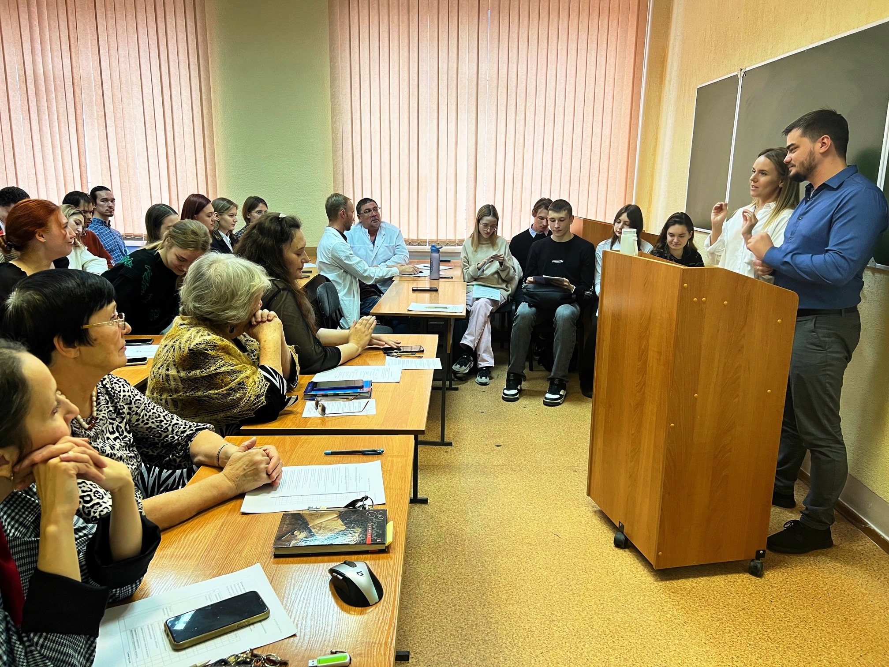

30 июня 2023
На фоне нашей непрекращающейся работы по защите и уходу за животными, мы с гордостью объявляем о начале нового партнерства с местной школьной системой. Это сотрудничество направлено на образование молодого поколения в вопросах ухода за животными и экологии.
Через серию интерактивных семинаров и практических занятий, наши специалисты будут обучать школьников основам ответственного отношения к животным и важности сохранения природы. Программа включает в себя как теоретические лекции, так и практические занятия, в том числе визиты в наш приют.
Одной из ключевых целей этого партнерства является формирование у детей понимания важности заботы о животных и окружающей среде с раннего возраста, что, мы верим, поможет формированию более ответственного и осознанного поколения в будущем.
Мы благодарим местные школы за их открытость и готовность участвовать в этой важной инициативе и с нетерпением ждем результатов нашего совместного влияния на молодежь.